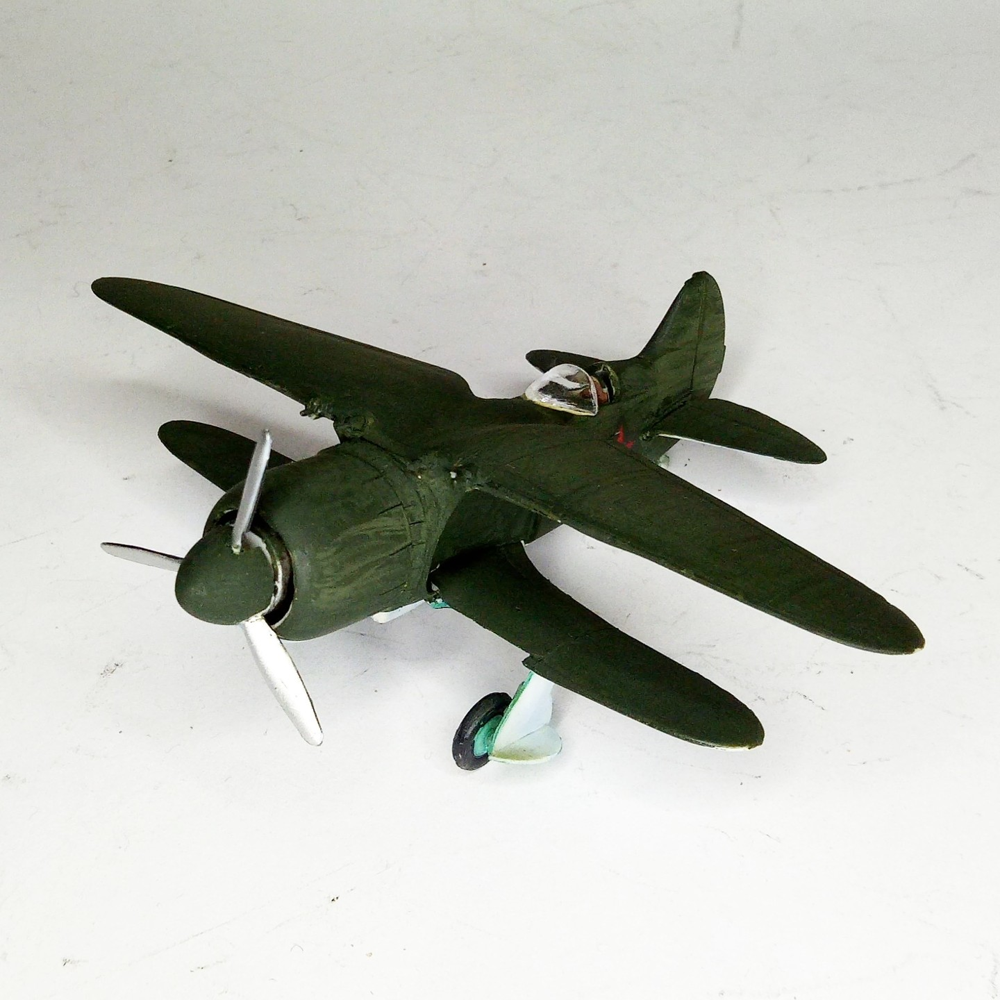
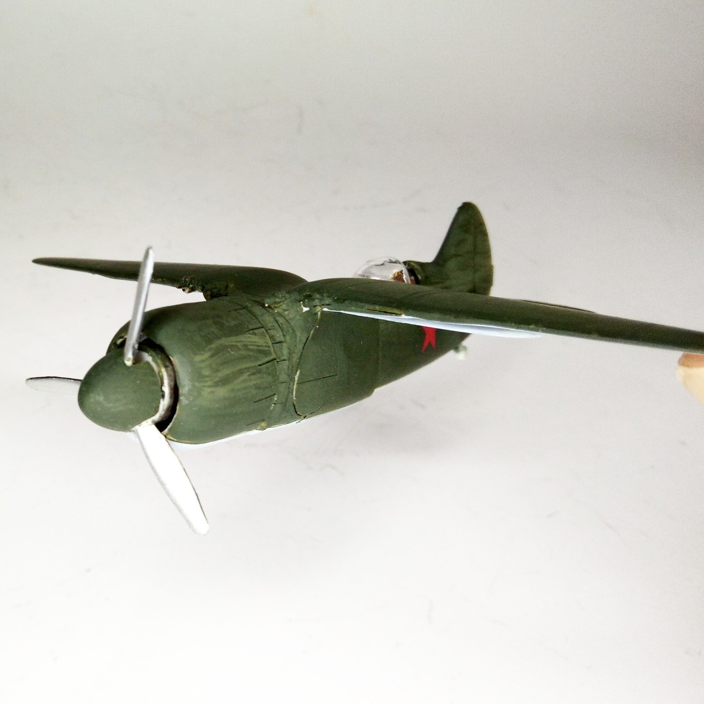
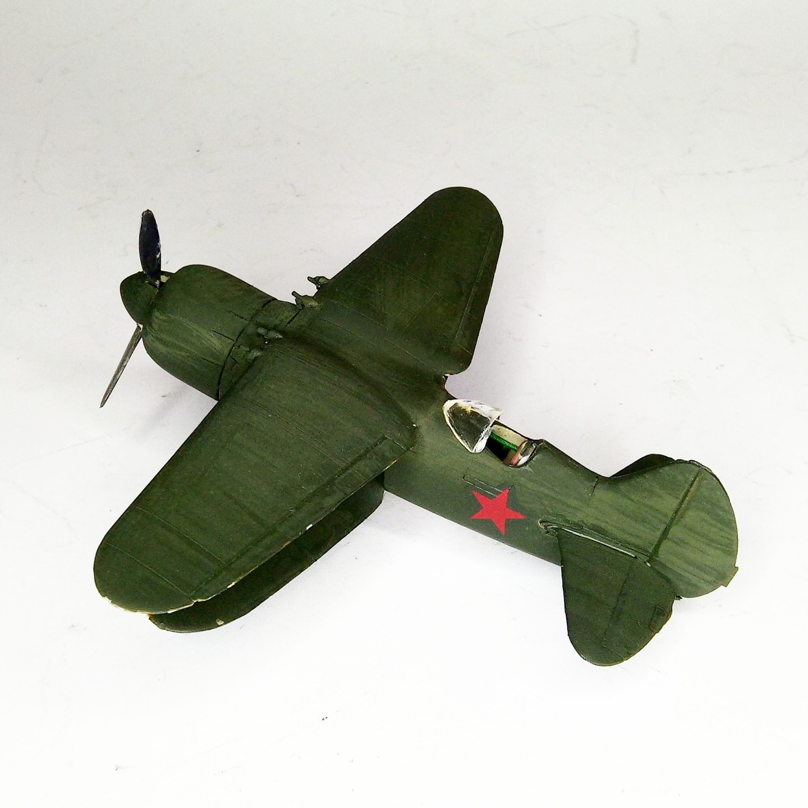

Aerei · scale model archive
IS-2 Soviet experimental fighter
IS-2 Soviet experimental fighter — Kit: Amodel, Scale: 1/72. Incredible russian biplane with retractable lower wing! #1/72 #Amodel #IS2 #wow

Photo gallery


English description
Incredible russian biplane with retractable lower wing!
#1/72 #Amodel #IS2 #wow
Descrizione italiana
Incredibile biplano russo con ala inferiore retrattile.